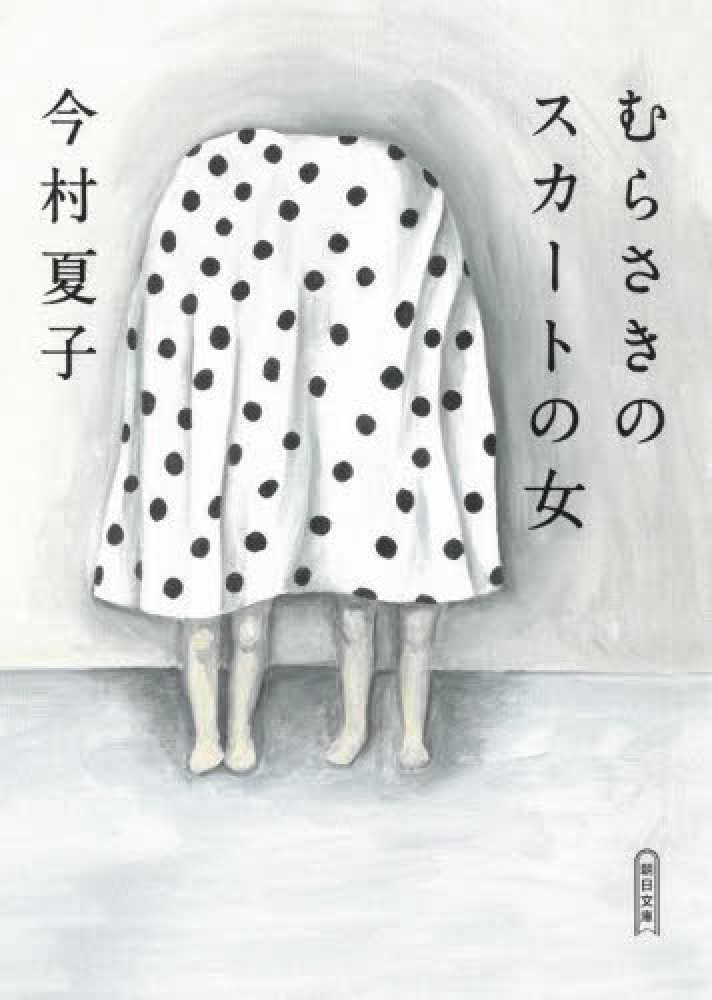
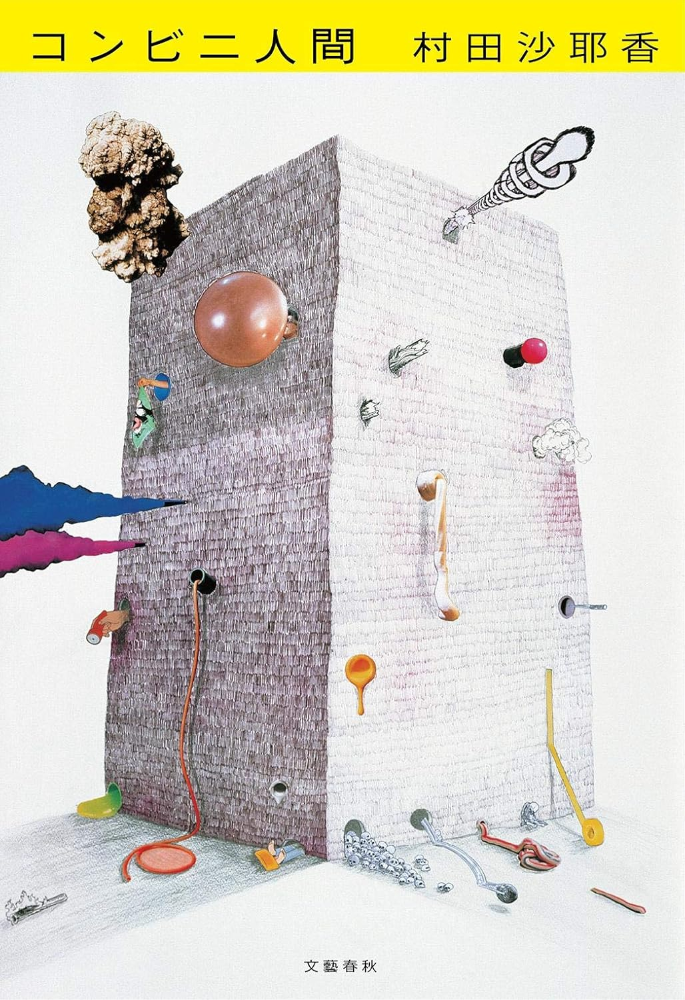
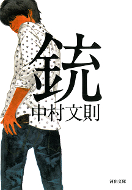
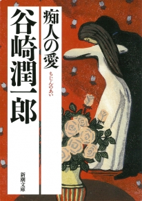
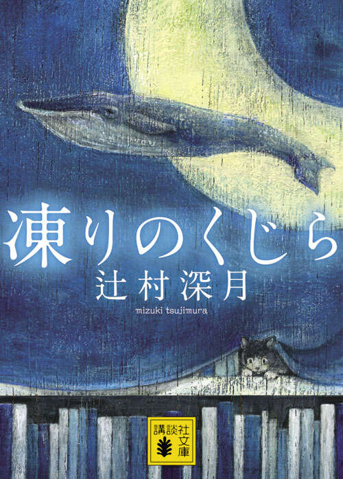

← 目録へ戻る
おすすめ

むらさきのスカートの女
今村夏子｜朝日文庫｜2026-02-19
その異常な執着はどこから。狂気と正気の交錯する観察が、無形の不気味な何かと化して、読者を襲う。

コンビニ人間
村田沙耶香｜文藝春秋｜2025-11-28
現代において多様性は本当に尊重されているのか？ただのコンビニバイトによる、鮮やかすぎる一撃。

銃
中村文則｜河出書房｜2025-11-18
気分が悪くなるほどの緊張感と、得体のしれない執着と恍惚。不気味なのにページを捲る手が止まらない。

痴人の愛
谷崎潤一郎｜新潮社｜2025-12-03
一風変わった夫婦のお話。ダメな男なのに情がわいてしまう、譲治さん、わかるよその気持ち。

凍りのくじら
辻村深月｜講談社｜2025-11-19
"四次元"空間での個性が爆発。少し・不思議ですごく・震える。